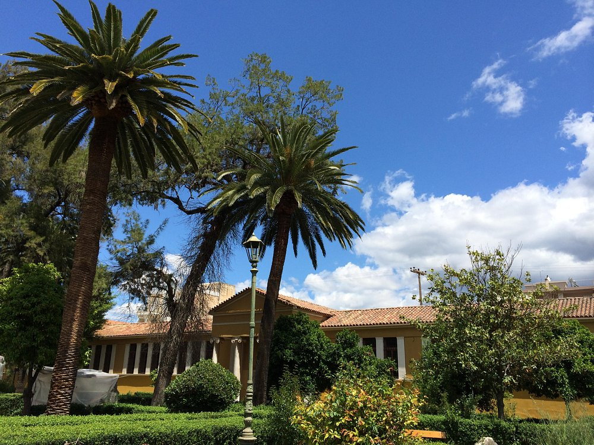
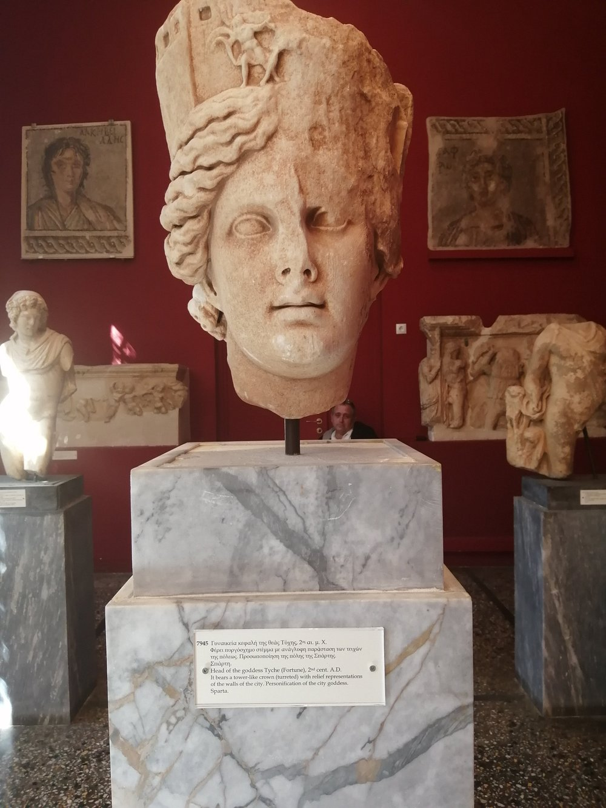
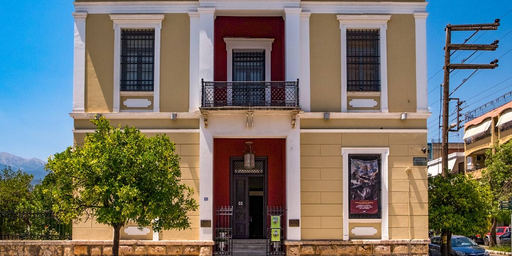

Museum
Archaeological Museum of Sparta
 -
The Archaeological Museum of Sparta comprises the oldest provincial archaeological museum of the country. Its neoclassical building was constructed between 1874 and 1876 in the center of the city and it has been declared a listed building for its architectural and historical interest.
- Palatial Style amphoras from the Mycenaean cemetery at Pellana.
- Clay masks of the 7th-6th centuries BC from the sanctuary of Artemis Orthia, depicting warriors and medusae. These were votive offerings, probably used in rituals to honor the goddess.
- Among the best preserved specimens of Laconic sculpture is the pyramidal stele with relief decoration on either side, depicting probably Menelaus and Helen on the one side, while on the other is represented Orestes murdering his mother Clytemnestra. The stele is dated to the 6th century BC.
- Statue of a Spartan warrior, the so-called Leonidas. Only the upper part of the torso is preserved. The statue was found in the sanctuary of Athena Chalkioikos at the acropolis of Sparta and is dated to the second quarter of the 5th century BC.
- Mosaics of the Hellenistic and Roman times, some bearing mythological scenes, such as the abduction of Europe by Zeus or Orpheus with his lyre and animals.
With finds ranging chronologically from the Mycenaean to the Roman period (1100 BC-324 AD), the exhibition of the museum offers a panorama of the art and history of ancient Sparta. Of particular interest are the finds from the most important sanctuaries in the region: The sanctuary of Artemis Orthia, a cult center associated with the rites of passage the young Spartans underwent through their rigorous agogi; the sanctuary of Apollo of Amyklae, a significant political and religious center of Sparta throughout antiquity, and the Menelaeion at ancient Therapni. Here is attested, from at least the 8th century BC, the cult of the mythical king of Sparta Menelaus and of his wife, Helen of Troy.
Among the most important exhibits of the museum are:
___________________________________________________________________________
Koumantareios Art Gallery of Sparta


The Koumantareios Art Gallery of Sparta occupies a remarkable neoclassical mansion of the early twentieth century. It is donated by Dolly Goulandris and her brother George Koumantaros in honor of their art-loving father, John Koumantaros, who dreamed to establish a gallery in his hometown. The Koumantareios Gallery opened in 1982 and operates as part of the National Gallery.
The Gallery contains a permanent exhibition of oil paintings -dekatesseris western European painters of the last decades of the sixteenth to the early twentieth century donated by John Koumantaros. The number of works in the collection is small but prefigures the rich evolution of portraiture, the landscape painting of genre painting and still life.
-
Temporary exhibitions of works from the collections of the National Gallery. The aim of these reports is to acquaint the public with modern Greek painting.
Hospitality reports are of particular importance for the local community.
Priority is given to the educational role of the Gallery. Educational programs addressed to pupils / students of all levels of education and to specific audiences. The children work with handouts and suggested activities that take into account the detailed curriculum. The skopothesia education programs defined in each case by age, interests and group features.
General programs aimed at linguistic, cognitive, emotional, moral and mainly aesthetic culture of the team members. Educational activities extend beyond its natural limits Gallery.
Of particular importance is the educational dialogue that has developed between the Gallery and other institutions abroad, such as the programs carried out in collaboration with the Department of Carnegie Mellon University in the United States Fine Arts and University of Israel. Many of the programs have been published in print in Greece and abroad and announced in national and international conferences.